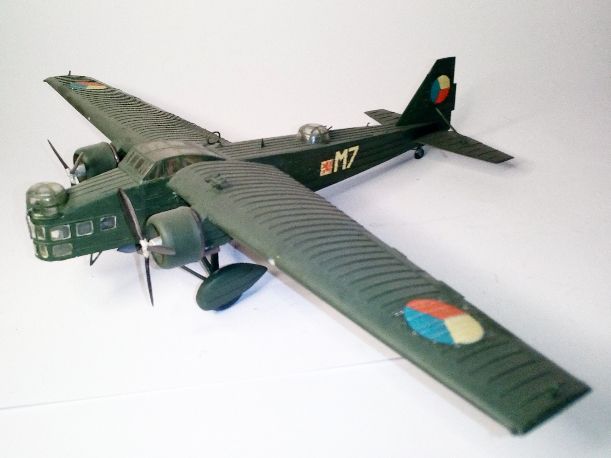
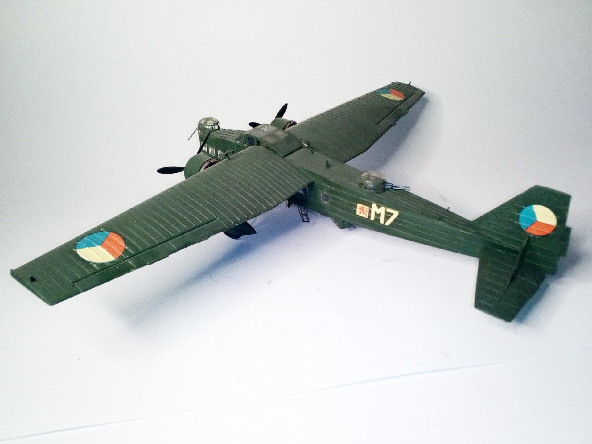

Aerei · scale model archive
Aero MB200
Aero MB200 — Kit: KP, Scale: 1/72. Bloch MB200 in Czech service. Mean look indeed #1/72 #KP #MB200

Photo gallery

English description
Bloch MB200 in Czech service.
Mean look indeed
#1/72 #KP #MB200
Descrizione italiana
Bloch MB200 in servizio ceco. Aspetto davvero severo.